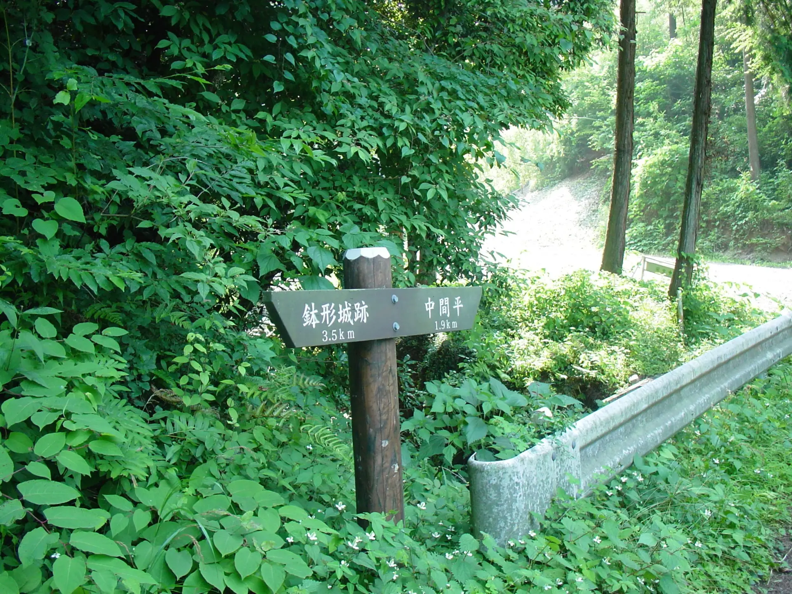
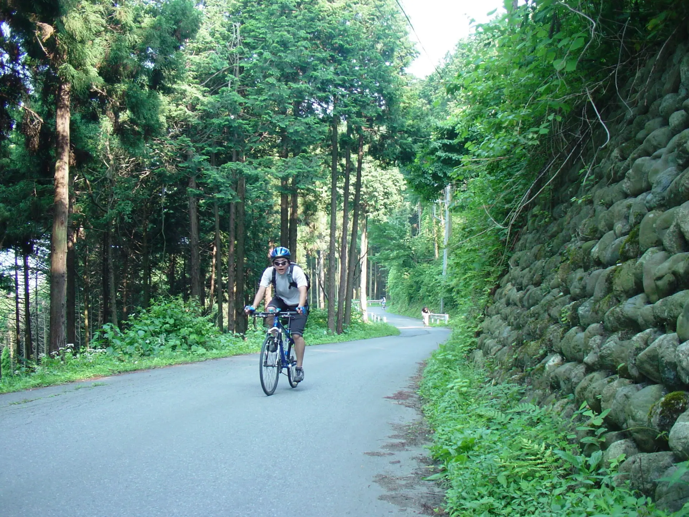
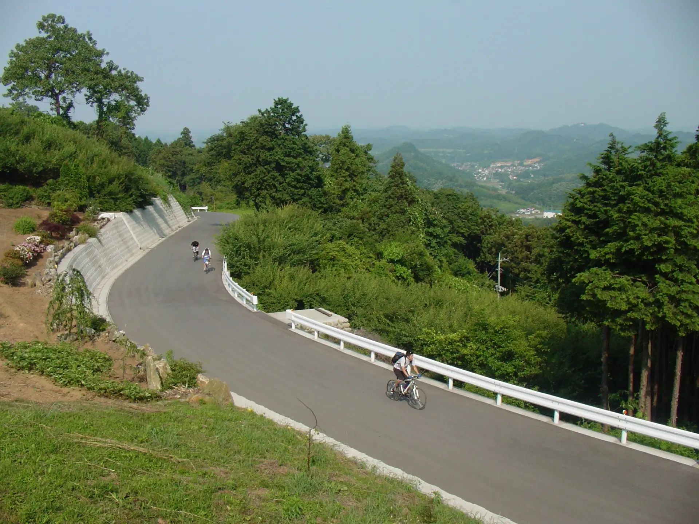
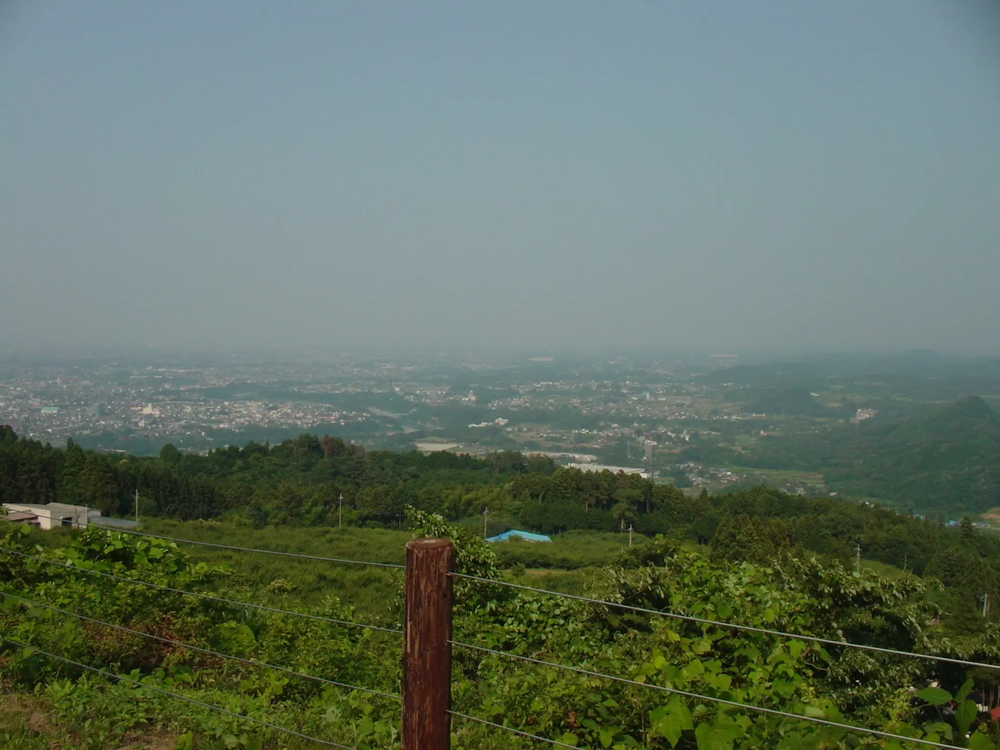
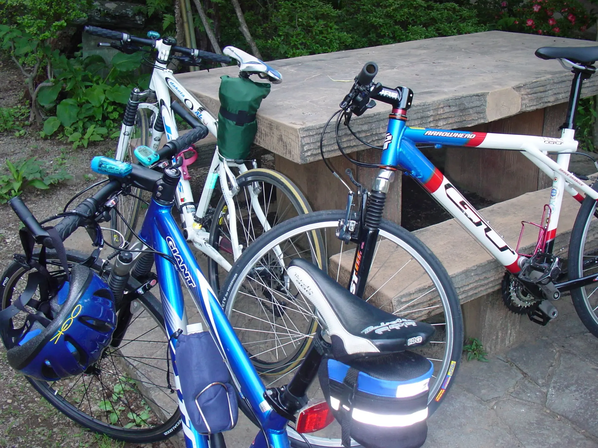

2003年6月21日 埼玉県寄居町 釜伏峠
当時、埼玉県の北の方の高校に通っていた。自分を含め、当時スポーツ自転車（MTB）を持っている生徒が3人いたので、流れでサイクリング部が結成された。半ドンの日の午後に、近所の峠を走りにいったり、皆がロードを手に入れてからは学校の周りを走ったりしていた。
その一コマとして、埼玉県寄居町の釜伏峠に行ったときの写真。
釜伏峠へ
この写真は顧問の先生がデジカメで撮った写真である。まあ、22年も前の掲載なので載せて大丈夫でしょう。ExifによるとSONY サイバーショットのなにかの機種で撮影したらしい。下の画像は国道254号を寄居へ向かっているところのようだ。

釜伏峠へ上っていく。
自分。サングラスをかけているのでそのまま載せる。
顧問の先生はスクーターに乗っていたので、先行して写真を撮ってくれた。先頭を走っているのが自分。
峠か、もしくは峠の少し下からの景色。
2000年代前半のスポーツ自転車事情について
部員の自転車。自分の自転車は青いGIANT。
2003年という時代は、まだ1990年代のMTBブームの名残りが強い時代で、スポーツ自転車を買うというと真っ先に候補に上がるのがMTBだった。最初に買うのはフロントサスペンションがついた5万円前後のエントリーグレードのMTBの場合が多く、スリックタイヤに交換して街乗りやツーリングに使うことが多かった。1999年に公開された映画「メッセンジャー」の影響も大きい。
ロードバイク、というか「ロードレーサー」はマイナーな乗り物だった。そもそも、スポーツ用自転車そのものがいまと比べてはるかに流行っていなかった。2003年、ヘルメットを被ってMTBでキャンプツーリングをしていたら、通りがかりの子供に「競輪？」と言われたのを覚えている。
2000年代中盤になるとクロスバイクという選択肢が出てくる。また、2000年代後半からはロードバイクブームが巻き起こる。
2025年12月13日記事公開